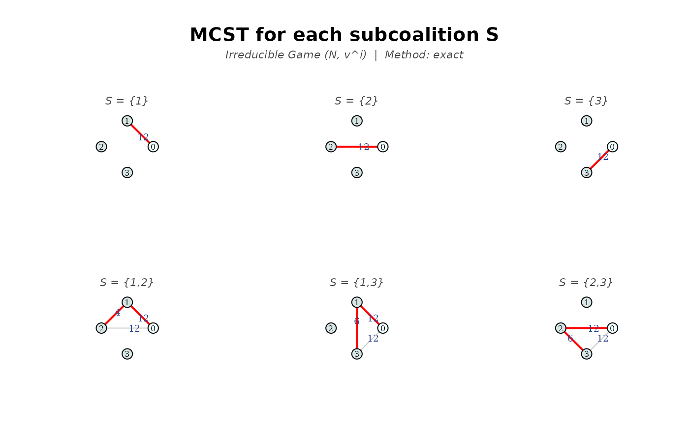
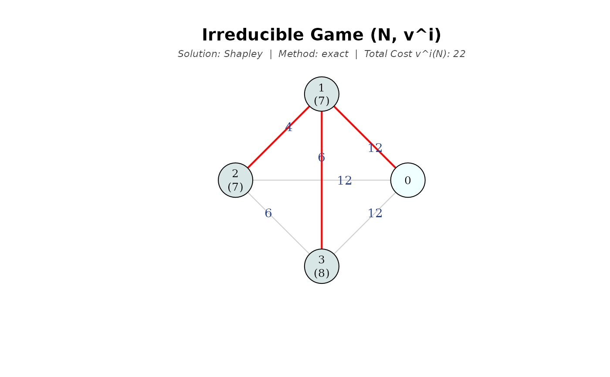
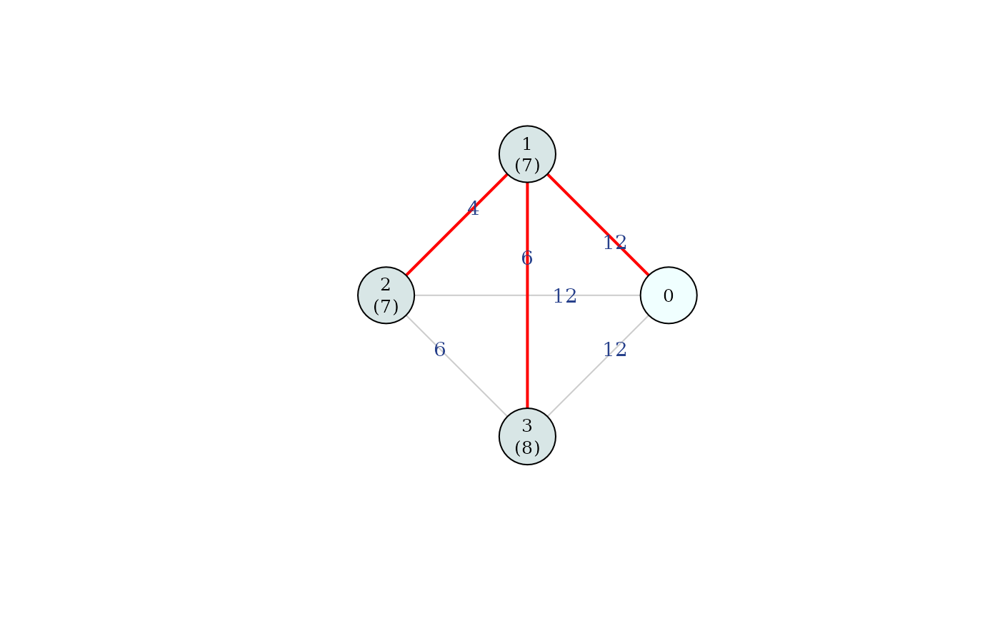

This function computes the cost allocation for the irreducible game (Bird, 1976) associated with a minimum cost spanning tree problem \((N_0, C)\), using a specified solution concept. The irreducible game, denoted as \((N, v_C^i)\) \((\)or simply \((N, v^i)\)\()\), is defined as the private game associated with the irreducible cost matrix \(\bar{C}\).
Arguments
- C
cost matrix between nodes. Accepts multiple formats (see "Supported formats for
C" below).- sol
character; the solution concept to apply. Options are
"shapley"(default), or"nucleolus"(only formethod = "exact").- draw
logical; if
TRUE, plots the network highlighting an optimal tree in red (constructed using Prim's algorithm), indicating the cost allocated to each agent in brackets below the node. For \(n \le 3\) andmethod = "exact", it also displays the optimal network for each subcoalition \(S \subset N\).- which.plot
character string indicating which plots to display. If
"details"(only for \(n \le 3\) andmethod = "exact"), displays the optimal network for each subcoalition \(S \subset N\); if"main", the allocation for \(N\) is plotted. Default isc("main", "details").- titles
logical; if
TRUE(default), adds a main title specifying the cooperative game and a subtitle with the solution concept, method (exact or Monte Carlo) and the total network cost.- method
character string specifying the calculation method. If
"exact"(default), computes the exact allocation (Shapley value or nucleolus) and the full characteristic function; if"montecarlo", estimates an approximation of the Shapley value through random sampling usingnsimpermutations. It uses lazy evaluation to avoid computing all possible coalitions (recommended for large networks).- nsim
integer; the number of permutations to sample when using
method = "montecarlo". Default is 10,000.
Value
A list containing:
coalitions: a character vector representing all possible coalitions \(S \subseteq N\), ordered by cardinality. Ifmethod = "montecarlo", returns a string indicating that lazy evaluation was used.C_irred: the irreducible cost matrix \(\bar{C}\) associated with the MCST of the problem.v_i: a numeric vector containing the characteristic function values \(v^i(S)\) for all coalitions. Ifmethod = "montecarlo", returns a string indicating that lazy evaluation was used.contributions: a data frame with the marginal contributions for the sampled permutations. Ifmethod = "exact", returns a string indicating that this table is not used.allocation: a numeric vector containing the computed cost allocation for each agent.total: the total cost of the MCST, \(v^i(N)\).nperms: the number of permutationsnsimused in the calculation. Ifmethod = "exact", returns a string indicating that it was not computed.percentage: the share of the total cost allocated to each agent.ranking: ranking of agents by cost (from highest to lowest; ties marked with *).method: the method used for the calculation ("exact"or"montecarlo").sol: the solution concept used ("shapley"or"nucleolus").
Details
The irreducible game \((N, v_C^i)\) is a cooperative game with transferable utility (TU game) defined for each coalition \(S \subseteq N\) as:
$$v_C^i(S) = m(S_0, \bar{C}),$$
where \(m(S_0, \bar{C})\) is the cost of the minimum spanning tree of the subproblem induced by the agents in \(S\) and the source, evaluated over the irreducible costs \(\bar{C}\). The irreducible cost between any two nodes corresponds to the maximum cost arc on the unique path connecting them in the optimal tree.
Under method = "exact", the function builds the full characteristic
function (all \(2^n - 1\) values). Depending on the chosen solution concept,
it computes the allocation via shapleyValue (which
relies on the coalition-based formula) or nucleolus.
For larger networks, method = "montecarlo" provides an approximation
of the Shapley value through random sampling using \(n_{sim}\) permutations. This approach
implements lazy evaluation based on the permutation formula of the Shapley value:
instead of computing the MST cost for all \(2^n - 1\)
possible subsets, it only evaluates the specific subcoalitions generated by
the random permutations.
This is highly useful when the number of agents is large, as it significantly reduces memory usage and computation time while providing a very accurate approximation of the exact allocation. For networks with few players, the exact method is preferred to avoid potential overestimations.
For more details on these formulas, see mcstRules.
Note
The irreducible game is a strong reference for stability. Its core (the irreducible core) is always non-empty and constitutes a subset of the core of \(v^p\). Classical rules such as Bird and folk are known to belong to the core of \(v^i\).
It has been proven that the Shapley value of the irreducible game coincides
with both the mcstFolk of the original problem and mcstBird applied to
the irreducible costs (Bergantiños and Vidal-Puga, 2007a).
Unlike the private game, calculating solution concepts for the irreducible game is computationally efficient. Computing both the Shapley value and the nucleolus of \(v^i\) can be done in \(O(|N|^2)\) time.
Supported formats for C
Note: In all cases, Inf is accepted for disconnected node pairs. The first
row/column is assumed to be the source node (0).
The function accepts the following formats for the cost input:
- Numeric vector
The lower triangle of a symmetric cost matrix, excluding the diagonal. Length must be \(n(n+1)/2\), where \(n\) is the number of agents (excluding the source).
- Square matrix / Data frame
A standard adjacency matrix where
C[i, j]represents the cost between node \(i\) and node \(j\).- Edge list (matrix or data frame)
An alternative to the full matrix. It must contain columns named
"from"and"to", plus a third column for the weights/costs.- 'igraph' object
A weighted undirected graph. See the
igraphpackage for details on creating these objects.- File path
A string pointing to a
.csv,.xlsx, or.xlsfile. The file can contain either a square matrix (without headers) or an edge list (with"from"and"to"headers).
References
Bergantiños G, Vidal-Puga J (2007a) A fair rule in minimum cost spanning tree problems. J Econom Theory 137(1):326–352
Bergantiños G, Vidal-Puga J (2021) A review of cooperative rules and their associated algorithms for minimum-cost spanning tree problems. SERIEs, 12:73-100
Bird C (1976) On cost allocation for a spanning tree: a game theoretic approach. Networks 6(4):335–350
See also
mcstBird of \((N_0, \bar{C})\), mcstFolk
of \((N_0, C)\) for classical rules belonging to the core of \(v^i\)
that coincide with \(Sh(N,v^i)\).
mcstGamePrivate, mcstGamePublic for the pessimistic and optimistic games based on the original costs.
mcstGameCC for the pessimistic game based on the cycle-complete cost matrix \(C^*\).
mcstGameOpt for an equivalent game under the Shapley value.
mcstRules for an overview of the available rules and analysis tools in the package.
Examples
# Simple vector input
mcstGameIrred(c(12, 15, 20, 4, 6, 8), sol = "shapley", draw = TRUE)


#> S v^i(S)
#> 1 {1} 12
#> 2 {2} 12
#> 3 {3} 12
#> 4 {1,2} 16
#> 5 {1,3} 18
#> 6 {2,3} 18
#> 7 N 22
#>
#> Solution: Shapley
#> 1 2 3
#> 7 7 8
# Input with infinite costs (disconnected nodes)
C_inf <- c(5, 9, Inf, 15, 6, Inf, 7, Inf, Inf, Inf,
Inf, 8, 7, Inf, Inf, 5, Inf, Inf, 8, 9, 11)
mcstGameIrred(C_inf, sol = "shapley")
#> S v^i(S)
#> 1 {1} 5
#> 2 {2} 7
#> 3 {3} 7
#> 4 {4} 7
#> 5 {5} 6
#> 6 {6} 9
#> 7 {1,2} 12
#> 8 {1,3} 12
#> 9 {1,4} 12
#> 10 {1,5} 11
#> 11 {1,6} 14
#> 12 {2,3} 14
#> 13 {2,4} 14
#> 14 {2,5} 13
#> 15 {2,6} 16
#> 16 {3,4} 12
#> 17 {3,5} 13
#> 18 {3,6} 16
#> 19 {4,5} 13
#> 20 {4,6} 16
#> 21 {5,6} 15
#> 22 {1,2,3} 19
#> 23 {1,2,4} 19
#> 24 {1,2,5} 18
#> 25 {1,2,6} 21
#> 26 {1,3,4} 17
#> 27 {1,3,5} 18
#> 28 {1,3,6} 21
#> 29 {1,4,5} 18
#> 30 {1,4,6} 21
#> 31 {1,5,6} 20
#> 32 {2,3,4} 19
#> 33 {2,3,5} 20
#> 34 {2,3,6} 23
#> 35 {2,4,5} 20
#> 36 {2,4,6} 23
#> 37 {2,5,6} 22
#> 38 {3,4,5} 18
#> 39 {3,4,6} 21
#> 40 {3,5,6} 22
#> 41 {4,5,6} 22
#> 42 {1,2,3,4} 24
#> 43 {1,2,3,5} 25
#> 44 {1,2,3,6} 28
#> 45 {1,2,4,5} 25
#> 46 {1,2,4,6} 28
#> 47 {1,2,5,6} 27
#> 48 {1,3,4,5} 23
#> 49 {1,3,4,6} 26
#> 50 {1,3,5,6} 27
#> 51 {1,4,5,6} 27
#> 52 {2,3,4,5} 25
#> 53 {2,3,4,6} 28
#> 54 {2,3,5,6} 29
#> 55 {2,4,5,6} 29
#> 56 {3,4,5,6} 27
#> 57 {1,2,3,4,5} 30
#> 58 {1,2,3,4,6} 33
#> 59 {1,2,3,5,6} 34
#> 60 {1,2,4,5,6} 34
#> 61 {1,3,4,5,6} 32
#> 62 {2,3,4,5,6} 34
#> 63 N 39
#>
#> Solution: Shapley
#> 1 2 3 4 5 6
#> 5 7 6 6 6 9
# Matrix input
C_mat <- matrix(c(0, 12, 15, 12,
12, 0, 4, 6,
15, 4, 0, 8,
12, 6, 8, 0), byrow = TRUE, ncol = 4)
mcstGameIrred(C_mat, draw = TRUE, which.plot = "main", titles = FALSE)

#> S v^i(S)
#> 1 {1} 12
#> 2 {2} 12
#> 3 {3} 12
#> 4 {1,2} 16
#> 5 {1,3} 18
#> 6 {2,3} 18
#> 7 N 22
#>
#> Solution: Shapley
#> 1 2 3
#> 7 7 8